NetScaler 11 System Configuration
Navigation
This page contains the following topics:
- VPX Hardware
- Customer User Experience Improvement Program
- Welcome Wizard
- Licensing:
- Upgrade Firmware
- High Availability
- Multiple Interfaces/VLANs (aka two-arm) :idea:
- DNS Servers
- NTP Servers
- Syslog Server
- SNMP Configuration
- Call Home
- Change nsroot password
- TCP, HTTP, SSL, and Security settings
- LDAP Authentication for Management
- CLI Prompt
- Backup and Restore
:idea: = Recently Updated
VPX Hardware
NetScaler VPX Release 11.0 Build 65.72 and newer supports new VPX models on ESXi. These new models include: VPX 25, VPX 5G, VPX 25G, etc. See the NetScaler VPX datasheet for more info. :idea:
11.0 build 65.72 and newer firmware also supports changing the NIC type to VMXNET3 or SR-IOV. The imported appliance comes with E1000 NICs so you'll have to remove the existing virtual NICs and add new VMXNET3 NICs.
NetScaler for Azure can now be upgraded to 11.0 build 65.31 or newer. It will be possible to upgrade to future releases of NetScaler firmware. More details by Thomas Goodwin at Citrix Discussions. :idea:
Customer User Experience Improvement Program
- You might be prompted to enable the Customer User Experience Improvement Program. Either click Enable or click Skip.


- You can enable or disable Customer Experience Improvement Program by going to System > Settings.
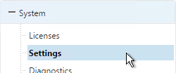
- On the right is Change CUXIP Settings.
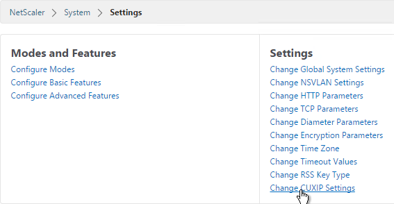
- Make your selection and click OK.
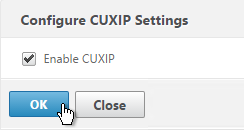
Welcome Wizard
NetScaler has a Welcome! Wizard that lets you set the NSIP, hostname, DNS, licensing, etc. It appears automatically the first time you login.
- Click the Subnet IP Address box.

-
You can either enter a SNIP for one of your interfaces or you can click Do it later.
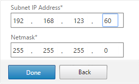
-
Click the Host Name, DNS IP Address, and Time Zone box.
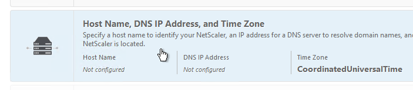
- Enter a hostname. Your NetScaler Gateway Universal licenses are allocated to this hostname. In a High Availability pair each node can have a different hostname.
- Enter one or more DNS Server IP addresses. Use the plus icon on the right to add more servers.
- Change the time zone to GMT-05:00-CDT-America/Chicago or similar.
-
Click Done.
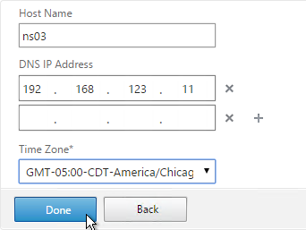
-
Click Yes to save and reboot.
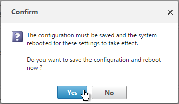
- Click the Licenses box.
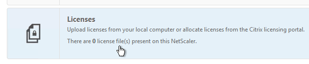
-
You can click Add New License to license the appliance now. Or do it later.
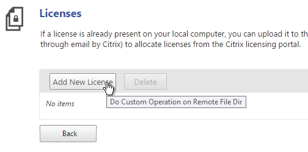
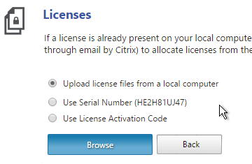
On the far right side of the screen is displayed the Host ID you need when allocating licenses.
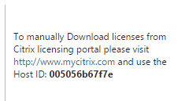
License files are stored in /nsconfig/license.
-
Then click Continue.
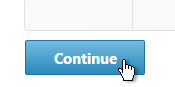
Licensing - VPX Mac Address
To license a NetScaler VPX appliance, you will need its MAC address.
- One method is to look in the GUI.

- In the right pane, look down for the Host Id field. This is the MAC address you need for license allocation.
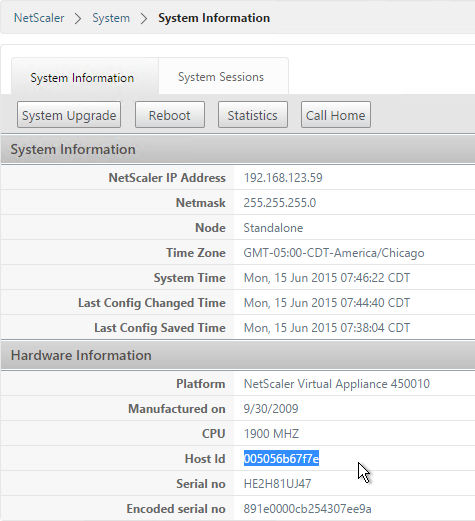
- Or go to System > Licenses.
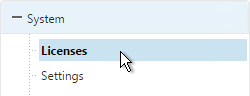
- On the right, click Manage Licenses.
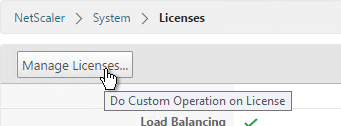
- Click Add New License.
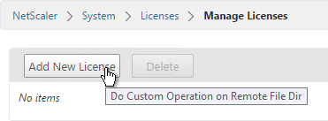
- On the far right side of the screen the Host ID is displayed.
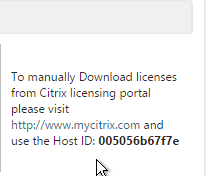
- Another option is to SSH to the appliance and run
shell. - Then run
lmutil lmhostid. The MAC address is returned.
Licensing - Citrix.com
- Login to citrix.com.
- Click Activate and Allocate Licenses.

- Check the box next to a Citrix NetScaler license and click Continue.

-
If this is a NetScaler MPX license then there is no need to enter a host ID for this license so click Continue. If this is a NetScaler VPX license, enter the
lmutil lmhostidMAC address into the Host ID field and click Next.
For a VPX appliance, you can also get the Host ID by looking at the System Information page.

-
Click Confirm.

- Click OK when asked to download the license file.

- Click Download.

- Click Save and put it somewhere where you can get to it later.
- If you purchased NetScaler Gateway Universal Licenses, allocate them. These licenses can come from XenMobile Enterprise, XenApp/XenDesktop Platinum Edition, NetScaler Platinum Edition, or a la carte.

- Enter your appliance hostname as the Host ID for all licenses.

- Click Confirm.

- Click OK when prompted to download your license file.
- Click Download.

- Click Save.
- If you have two appliances in a High Availability pair with different hostnames then you will need to return the NetScaler Gateway Universal licenses and reallocate them to the other hostname.
Install Licenses on Appliance
- In the NetScaler Configuration GUI, on the left, expand System and click Licenses.
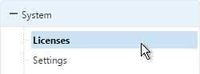
- On the right, click Manage Licenses.
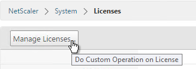
- Click Add New License.
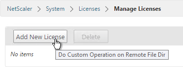
-
If you have a license file, select Upload license files from a local computer and then click Browse.
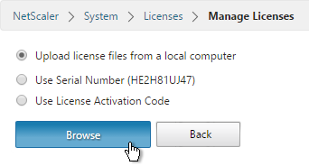
License files are stored in
/nsconfig/license. -
Click Reboot when prompted. Login after the reboot.
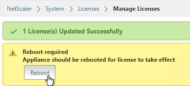
- After rebooting, the Licenses node should look something like this. Notice that Maximum ICA Users Allowed is set to Unlimited.
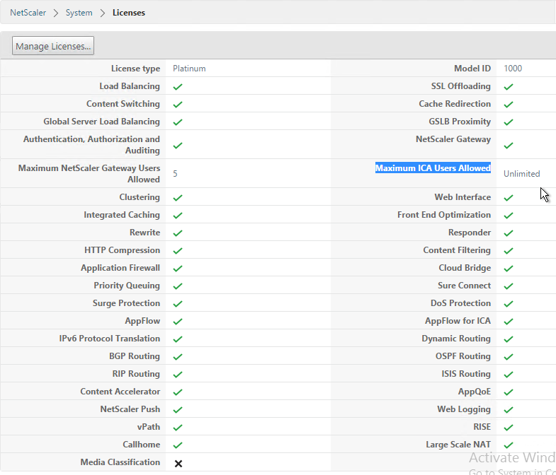
- Note: the NetScaler SNMP counter allnic_tot_rx_mbits must remain less than the licensed bandwitdh or else packets will drop.
Upgrade Firmware
Citrix CTX127455 - How to Upgrade Software of the NetScaler Appliances in a High Availability Setup
- Download firmware. Ask your Citrix Partner or Citrix Support TRM for recommended versions and builds. At the very least, watch the Security Bulletins to determine which versions and builds resolve security issues. You can also subscribe to the Security Bulletins at http://support.citrix.com by clicking the Alerts link on the top right.
- Make sure you Save the config before beginning the upgrade.
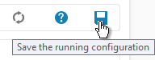
- Transferring the firmware upgrade file to the appliance will be slow unless you license the appliance first. An unlicensed appliance will reduce the maximum speed to 1 Mbps.
- When upgrading from 10.5 or older, make sure the NetScaler Gateway Theme is set to Default or Green Bubbles. After the upgrade, you'll have to create a new Portal Theme and bind it to the Gateway vServers.
- Start with the Secondary appliance.
- Before upgrading the appliance, consider using WinSCP or similar to back up the /flash/nsconfig directory.

- In the NetScaler GUI, with the top left node (System) selected, click, click System Upgrade.
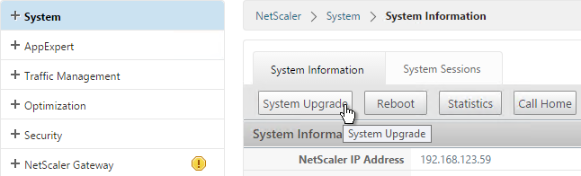
- Browse to the build…tgz file. If you haven’t downloaded firmware yet then you can click the Download Firmware link.
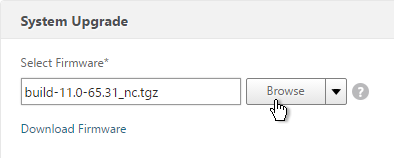
- Click Upgrade.
- The firmware will upload.
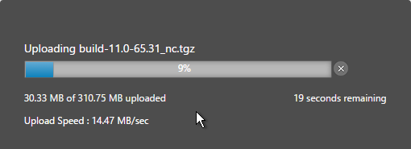
- You should eventually see a System Upgrade window with text in it. Click Yes when prompted to reboot.
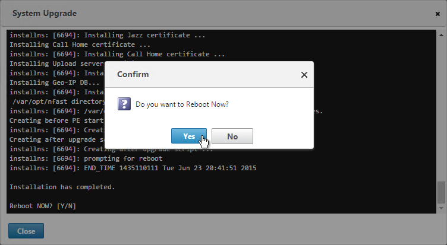
- Once the Secondary is done, login and failover the pair.

- Then upgrade the firmware on the former Primary.
To install firmware by using the command-line interface
- To upload the software to the NetScaler Gateway, use a secure FTP client (e.g. WinSCP) to connect to the appliance.
- Create a version directory under
/var/nsinstall(e.g. /var/nsinstall/11.0.61). - Copy the software from your computer to the
/var/nsinstall/<version>(e.g. /var/nsinstall/11.0.61) directory on the appliance. - Open a Secure Shell (SSH) client (e.g. Putty) to open an SSH connection to the appliance.
- At a command prompt, type
shell. - At a command prompt, type
cd /var/nsinstallto change to the nsinstall directory. - To view the contents of the directory, type
ls. - To unpack the software, type
tar -xvzf build_X_XX.tgz, wherebuild_X_XX.tgzis the name of the build to which you want to upgrade. - To start the installation, at a command prompt, type
./installns. - When the installation is complete, restart NetScaler.
- When the NetScaler restarts, at a command prompt type
whatorshow versionto verify successful installation.
High Availability
Configure High Availability as soon as possible so almost all configurations are synchronized across the two appliances. The exceptions are mainly network interface configurations.
High Availability will also sync files between the two appliances. See CTX138748 File Synchronization in NetScaler High Availability Setup for more information.
- Prepare the secondary appliance:
- Configure a NSIP.
- Don’t configure a SNIP. You can click Do It Later to skip the wizard.
- Configure Hostname and Time Zone. Don't configure DNS since you'll get those addresses when you pair it.
- License the secondary appliance.
- Upgrade firmware on the secondary appliance. The firmware of both nodes must be identical.
-
On the secondary appliance, go to System > High Availability, double-click the local node, and change High Availability Status to STAY SECONDARY. If you don't do this then you run the risk of losing your config when you pair the appliances. See Terence Luk Creating a Citrix NetScaler High Availability pair without wiping out an existing configuration for more information.
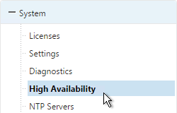
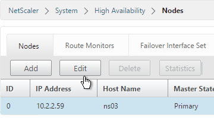
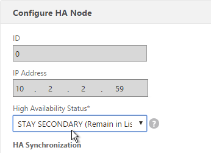
-
On the primary appliance, on the left, expand System, expand Network and click Interfaces.
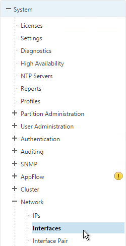
-
On the right, look for any interface that is currently DOWN. You need to disable those disconnected interfaces before enabling High Availability. Right-click the disconnected interface and click Disable. Repeat for the remaining disconnected interfaces.
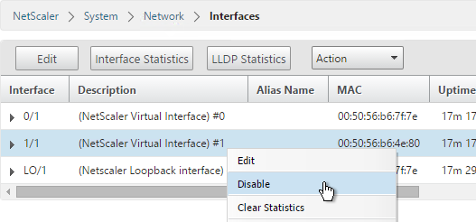
-
On the left, expand System and click High Availability.
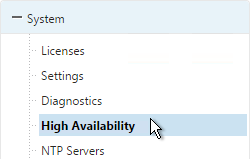
- On the right, click Add.
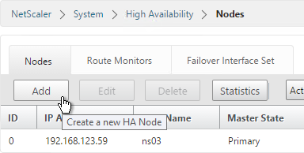
- Enter the other NetScaler’s IP address.
-
Enter the other NetScaler’s login credentials and click Create.
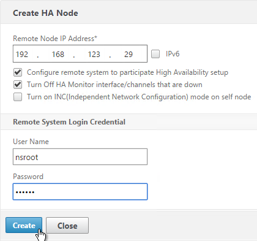
add ha node 1 192.168.123.14Note: this command must be run separately on each appliance.
-
If you click the refresh icon near the top right, Synchronization State will probably say IN PROGRESS.
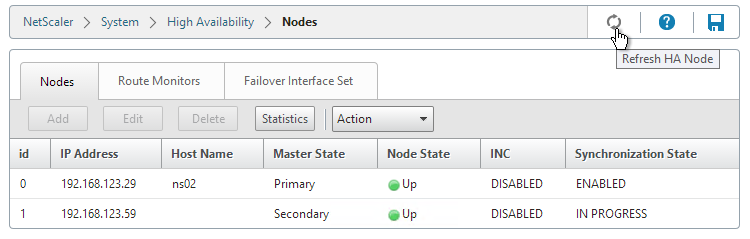
Eventually it will say SUCCESS.
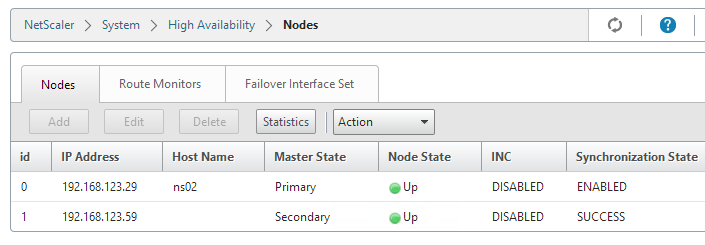
-
To enable Fail-safe mode, edit Node ID 0 (the local appliance).
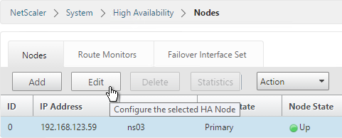
-
Under Fail-safe Mode, check the box next to Maintain one primary node even when both nodes are unhealthy. Scroll down and click OK.
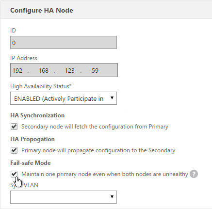
set ha node -failSafe ON -
If you login to the Secondary appliance, you might see a message warning you against making changes. Always apply changes to the Primary appliance.

- On the secondary appliance, go to System > High Availability, double-click the local node, and change it from STAY SECONDARY to ENABLED.
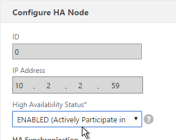
- From the CLI, run "sh ha node" to see the status. You should see heartbeats on all interfaces. If not, configure VLANs as detailed in the next section.

-
You can force failover of the primary appliance by opening the Actions menu, and clicking Force Failover.

force ha failoverIf your firewall (e.g. Cisco ASA) doesn’t like Gratuitous ARP, see CTX112701 - The Firewall Does not Update the Address Resolution Protocol Table
Multiple Interfaces - VLANs
Citrix CTX214033 Networking and VLAN Best Practices for NetScaler discusses many of the same topics detailed in this section.
Channels: You should never connect multiple interfaces to a single VLAN unless you are bonding the interfaces using LACP, Manual Channel, or the new Redundant Interface Set feature. See Webinar: Troubleshooting Common Network Related Issues with NetScaler.
NetScaler VPX defaults to two connected interfaces, so if you only have one subnet, disconnect one of those interfaces.
A Redundant Interface Set is configured almost identically to a Manual Channel except that the Channel ID starts with LR instead of LA.
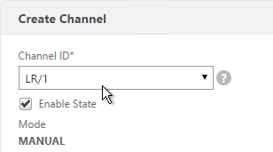
Common interface configuration: Here is a common NetScaler networking configuration for a NetScaler that is connected to both internal and DMZ.
Note: If the appliance is connected to both DMZ and internal then be aware that this configuration essentially bypasses (straddles) the DMZ-to-internal firewall. That's because if a user connects to a public/DMZ VIP, then NetScaler could use an internal SNIP to connect to the internal server. A more secure approach is to have different appliances for internal and DMZ. Or use NetScaler SDX, partitioning, or traffic domains.
- 0/1 connected to a dedicated management network. NSIP is on this network.
- 0/1 is not optimized for high throughput so don't put data traffic on this interface. If you don't have a dedicated management network, then put your NSIP on one of the other interfaces (1/1, 10/1, etc.) and don't connect any cables to 0/1.
- To prevent NetScaler from using this interface for outbound data traffic, don't put a SNIP on this network, and configure the default gateway to use a different data network. However, if there's no SNIP, and if default gateway is on a different network, then there will be asymmetric routing for management traffic since inbound is 0/1 but outbound is LA/1. To work around this problem, enable Mac Based Forwarding. Or create a Policy Based Route.
- It's easiest if the switch port for this interface is an Access Port (untagged). If VLAN tagging is required, then NSVLAN must be configured on the NetScaler.
- 10/1 and 10/2 in a LACP port channel (LA/1) connected to internal VLAN(s). Static routes to internal networks through a router on one of these internal VLANs.
- If only one internal VLAN, configure the switch ports/channel as an Access Port.
- If multiple internal VLANs, configure the switch ports/channel as a Trunk Port. Set one of the VLANs as the channel's Native VLAN so it doesn't have to be tagged.
- If the networking team is unwilling to configure a Native VLAN on the Trunk Port, then NetScaler needs special configuration (tagall) to ensure HA heartbeat packets are tagged.
- 1/1 and 1/2 in a LACP port channel (LA/2) connected to DMZ VLAN(s). Default gateway points to a router on a DMZ VLAN so replies can be sent to Internet clients.
- If only one internal VLAN, configure the switch ports/channel as an Access Port.
- If multiple internal VLANs, configure the switch ports/channel as a Trunk Port. Set one of the VLANs as the channel's Native VLAN so it doesn't have to be tagged.
- If the networking team is unwilling to configure a Native VLAN on the Trunk Port, then NetScaler needs special configuration (tagall) to ensure HA heartbeat packets are tagged.
SNIPs: You will need one SNIP for each connected subnet. VLAN objects (tagged or untagged) bind the SNIPs to particular interfaces. NetScaler uses the SNIP's subnet mask to assign IP addresses to particular interfaces.
NSIP: The NSIP subnet is special so you won't be able to bind it to a VLAN. Use the following SNIP/VLAN method for any subnet that does not have the NSIP. The remaining interfaces will be in VLAN 1, which is the VLAN that the NSIP is in. VLAN 1 is only locally significant so it doesn't matter if the switch is configured with it or not. Just make sure the switch has a native VLAN configured, or configure the interface as access port. If you require trunking of every VLAN, including the NSIP VLAN, then additional configuration is required (NSVLAN or Tagall).
To configure multiple connected subnets:
- On the left, expand System, and click Settings.
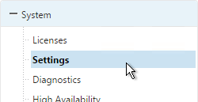
- On the right, in the left column, click Configure modes.
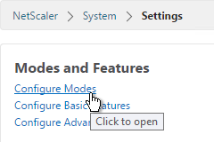
-
Check the box next to MAC Based Forwarding and click OK. This configures the NetScaler to respond on the same interface the request came in on and thus bypasses the routing table. This setting can work around misconfigured routing tables. More info on MAC Based Forwarding can be found at Citrix CTX1329532 FAQ: Citrix NetScaler MAC Based Forwarding (MBF).
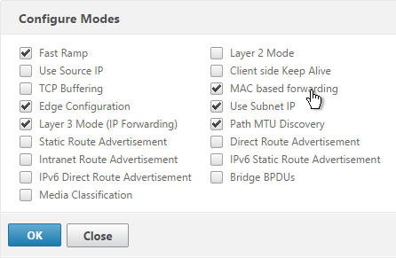
-
Add a subnet IP for every network the NetScaler is connected to, except the dedicated management network. Expand System, expand Network, and click IPs.
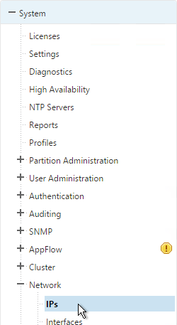
- On the right, click Add.
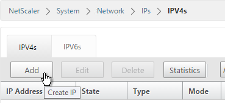
- Enter the Subnet IP Address for this network. This is the source address the NetScaler will use when communicating with any other service on this network. The Subnet IP can also be referred to as the Interface IP for the network. You will need a separate SNIP for each connected network (VLAN).
- Enter the netmask for this network. When you create a VLAN object later, all IPs on this subnet will be bound to an interface.
-
Ensure the IP Type is set to Subnet IP. Scroll down.
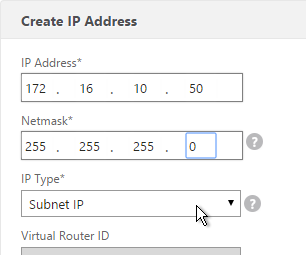
-
Under Application Access Controls decide if you want to enable GUI management on this SNIP. This is particularly useful for High Availability pairs, because when you point your browser to the SNIP only the primary appliance will respond. However, enabling management access on the SNIP can be a security risk, especially if this is a SNIP for the DMZ network.
-
Click Create when done. Continue adding SNIPs for each connected network (VLAN).
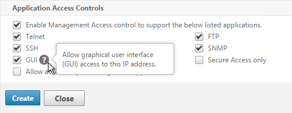
-
On the left, expand System, expand Network and click VLANs.
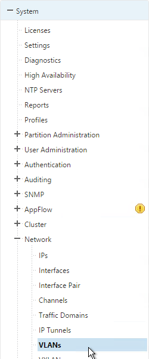
- On the right, click Add.
- Enter a descriptive VLAN ID. The actual VLAN ID only matters if you intend to tag the traffic. If not tagged then any ID will work.
- Check the box next to one physical interface or channel (e.g. LA/1) that is connected to the network.
- If this is a trunk port, select Tagged if the switch port/channel is expecting the VLAN to be tagged.
- If your switches do not allow untagged packets then you will need to use the tagall interface option to tag NetScaler High Availability heartbeat packets. See CTX122921 - Citrix NetScaler Interface Tagging and Flow of High Availability Packets
- If you don't tag the VLAN, then the NetScaler interface/channel is removed from VLAN 1 and instead put in this VLAN ID.
- Switch to the IP Bindings tab.
-
Check the box next to the Subnet IP for this network. This lets NetScaler know which interface is used for which IP subnet. Click Create when done.
-
The default route should use the router in the DMZ, not the internal router. Most likely the default route is set to an internal router. On the left, expand System, expand Network and click Routes.
- On the right, click Add.
-
Internal networks are only accessible through an internal router. Add a static route to the internal networks and set the Gateway to an internal router. Then click Create.
-
Before deleting the existing default route, either enable Mac Based Forwarding, or create a Policy Based Route, so that the replies from NSIP can reach your machine. To create a PBR, go to System > Network > PBRs.
- The source IP is the NSIP, and next hop is a router on the same network as the NSIP. Destination is not needed.
-
Then open the Action menu, and click Apply.
-
Go back to System > Network > Routes. On the right, delete the 0.0.0.0 route. Don’t do this unless the NetScaler has a route to the IP address of the machine you are running the NetScaler Configuration Utility on.
-
Then click Add.
-
Set the Network to 0.0.0.0 and the Netmask to 0.0.0.0. Enter the IP address of the DMZ router and click Create.
DNS Servers
- To configure DNS servers, expand Traffic Management, expand DNS and click Name Servers.
- On the right, click Add.
- Enter the IP address of a DNS server and click Create.
-
Note: The NetScaler must be able ping each of the DNS servers or they will not be marked as UP. The ping originates from the SNIP. If you are unwilling to enable Ping then you will need to load balance your DNS servers on the local NetScaler appliance.
NTP Servers
- On the left, expand System, and click NTP Servers.
- On the right, click Add.
-
Enter the IP Address of your NTP Server (or pool.ntp.org) and click Create.
add ntp server pool.ntp.org -
Open the Action menu and click NTP Synchronization.
-
Select ENABLED and click OK.
enable ntp sync -
You can click the System node to view the System Time.
- If you need to manually set the time, SSH (Putty) to the NetScaler appliances. Run date to set the time. Run date --help to see the syntax.
- Ntpdate –u pool.ntp.org will cause an immediate NTP time update.
Citrix Knowledgebase article CTX200286 - NTP Configuration on NetScaler to Avoid Traffic Amplification Attack:
-
Replace the following line in /etc/ntp.conf file, if it exists:
-
Add the following lines in file /etc/ntp.conf:
-
Restart NTP using the following commands:
Citrix Knowledgebase Article CTX200355 - Citrix Security Advisory for NTP Vulnerabilities: By default, NTP is disabled on the NetScaler and, as such, is not vulnerable to CVE-2014-9293, CVE-2014-9294, CVE-2014-9295 and CVE-2014-9296. However, in deployments where customers have enabled NTP on the appliance, it is likely that these vulnerabilities will impact NetScaler.
We recommend that customers apply the following remediation:
Open the NetScaler’s ntp.conf file in /etc and add the following lines:
restrict -4 default notrap nopeer nomodify noquery
restrict -6 default notrap nopeer nomodify noquery
In addition to adding the above two lines, all other 'restrict' directives should be reviewed to ensure that they contain both 'nomodify' and 'noquery' and that the file contains no 'crypto' directives.
When this editing is complete, save the file and copy it to the /nsconfig directory. The NTP service must then be restarted for the changes to take effect. As with all changes, Citrix recommends that this is evaluated in a test environment prior to releasing to production.
SYSLOG Server
Citrix CTX120609 NetScaler Log Rotation and Configuration Using Newsyslog
The NetScaler will by default store a few syslogs on the local appliance. You can create a syslog policy to also send the syslog entries to an external server, like Citrix Command Center.
- On the left, expand System, expand Auditing, and click Syslog.
- On the right, switch to the Servers tab and click Add.
- Enter a name for the Syslog server.
- Specify the IP Address of the SYSLOG server, 514 as the port, and the Log Levels you’d like to send to it.
- Check the box for TCP Logging if you want the client IP. Note: TCP Logging requires significant disk space on the Syslog server.
-
Select your desired Time Zone and then click Create.
-
On the right, switch to the Policies tab, and then click Add.

-
Give the policy a descriptive name, select the Syslog server, and then click Create.
-
While still on the Policies tab, open the Actions menu and click Global Bindings.
- Click the arrow next to Click to select.
- Select the Syslog policy you want to bind and click Select.
- Click Bind.

- Select the Syslog policy you want to bind and click Select.
- Then click Bind.
-
Click Done.
SNMP – MIB, Traps, and Alarms
- On the left, expand System, and click SNMP.
- On the right, click Change SNMP MIB.
- Change the fields as desired. Your SNMP tool (e.g. NetScaler Management and Analytics System) will read this information. Click OK.
-
This configuration needs to be repeated on the other node.
-
Expand System, expand SNMP, and click Community.
- On the right, click Add.
-
Specify a community string and the Permission and click Create.
-
On the left, under SNMP, click Traps.
- On the right, click Add.
-
Specify a trap destination and Community Name and click Create.
-
On the left, under SNMP, click Managers.
- On the right, click Add. Note: if you do not add a manager then the NetScaler will accept SNMP queries from all SNMP Managers on the network.
- Change the selection to Management Network.
-
Specify the IP of the Management Host and click Create.
-
The Alarms node allows you to enable SNMP Alarms and configure thresholds.
-
You can open an alarm to set thresholds. For example, CPU-USAGE can be set to 90% alarm and 50% normal with a Critical severity.
-
You can also configure the MEMORY alarm.
From http://www.slideshare.net/masonke/net-scaler-tcpperformancetuningintheaolnetwork: In addition to the usual OIDs, we have found these very useful to warn of potential problems.
- ifTotXo?Sent – .1.3.6.1.4.1.5951.4.1.1.54.1.43
- ifnicTxStalls – .1.3.6.1.4.1.5951.4.1.1.54.1.45
- ifErrRxNoBu?s – .1.3.6.1.4.1.5951.4.1.1.54.1.30
- ifErrTxNoNSB – .1.3.6.1.4.1.5951.4.1.1.54.1.31
Call Home
Citrix Blog Post - Protect Your NetScaler From Disaster With Call Home!: If you have a physical NetScaler (MPX or SDX) with an active support contract, you many optionally enable Call Home to automatically notify Citrix Technical Support of hardware and software failures.
- On the left, expand System and click Diagnostics.
- On the right, in the left column, in the Technical Support Tools section, click Call Home.
- Check the box next to Enable Call Home.
- Optionally enter an email address to receive notifications from Citrix Technical Support. Click OK.
- If you go back into Call Home, it should indicate if registration succeeded or failed. Successful registration requires an active support contract.

Change nsroot Password
- Expand System, expand User Administration and click Users.
- On the right, right-click nsroot, and click Change Password.
-
Specify a new password and click OK.
TCP, HTTP, SSL, and Security Settings
Citrix Knowledgebase articles:
- CTX127917 How to Configuring the Rate Limiting Feature of a NetScaler Appliance to Mitigate a DDoS Attack
- CTX131681 How to Use NetScaler Appliance to Avoid Layer 7 DDoS Attacks
-
CTX209398 Addressing false positives from CBC and MAC vulnerability scans of SSHD
-
On the left, expand System and click Settings.
- On the right side of the right pane, click Change TCP parameters.
- Check the box for Window scaling (near the top).
-
Scroll down and check the box for Selective Acknowledgement. Click OK.
-
On the right, click Change HTTP parameters.
-
Under Cookie, change the selection to Version1. This causes NetScaler to set Cookie expiration to a relative time instead of an absolute time.
-
Check the box next to Drop invalid HTTP requests.
-
Scroll down and click OK.

-
You can run the following command to see statistics on the dropped packets:
-
See CTX209398 Addressing false positives from CBC and MAC vulnerability scans of SSHD to harden SSHD by editing /nsconfig/sshd_config with the following. Then run
kill -HUP `cat /var/run/sshd.pid`to restart SSHD. :idea: -
Implement Responder policies to prevent Shellshock attack against back-end web servers. See Citrix CTX200277 NetScaler Defends Against Shellshock Attack.
add audit messageaction ShellShock_Log CRITICAL "\"The request was sent from \" +CLIENT.IP.SRC + \" Bash Code Injection Vulnerability\"" -bypassSafetyCheck YES add responder policy ShellShock_policy "HTTP.REQ.FULL_HEADER.REGEX_MATCH(re/\(\)\s*{/) || HTTP.Req.BODY(1000).REGEX_MATCH(re/\(\)\s*{/) || HTTP.REQ.URL.QUERY.REGEX_MATCH(re/\(\)(\s*|\++){/) || HTTP.REQ.BODY(1000).REGEX_MATCH(re#%28%29[+]*%7B#)" DROP ?logAction ShellShock_Log bind responder global ShellShock_policy 10 END -type REQ_DEFAULT
The following security configurations are detailed by Jason Samuel at Mitigating DDoS and brute force attacks against a Citrix Netscaler Access Gateway:
- Maximum logon attempts on NetScaler Gateway Virtual Server
- Rate Limiting for IP.SRC and HTTP.REQ.URL.
- nstcp_default_XA_XD_profile TCP profile on the NetScaler Gateway Virtual Server.
- Syslog logging
- External website monitoring
- Obfuscate the Server header in the HTTP response
- Disable management access on SNIPs
- Change nsroot strong password, use LDAP authentication, audit local accounts
- Don’t enable Enhanced Authentication Feedback
- SSL – disable SSLv3, deny SSL renegotiation, enable ECDHE ciphers, disable RC4 ciphers. Also see Anton van Pelt Make your NetScaler SSL VIPs more secure (Updated) .
- 2-factor authentication
- Command Center and Insight Center
- Review IPS/IDS & Firewall logs
Management Authentication
Load balancing of authentication servers is strongly recommended since during an authentication attempt only one LDAP server is chosen. If you instead bind multiple LDAP servers, it would try all of them, and for incorrect passwords, it will lock out the user sooner than expected.
- Expand System, expand Authentication, and then click LDAP.
- On the right, switch to the Servers tab. Then click Add.
- Enter LDAPS-Corp-Mgmt or similar as the name. If you have multiple domains, you’ll need a separate LDAP Server per domain so make sure you include the domain name. Also, the LDAP policy used for management authentication will be different than the LDAP policy used for NetScaler Gateway.
- Change the selection to Server IP. Enter the VIP of the NetScaler load balancing vServer for LDAP.
- Change the Security Type to SSL.
- Enter 636 as the Port. Scroll down.
- In the Connection Settings section, enter your Active Directory DNS domain name in LDAP format as the Base DN.
- Enter the credentials of the LDAP bind account in userPrincipalName format.
- Check the box next to BindDN Password and enter the password. Scroll down.
- In the Other Settings section, use the drop-down next to Server Logon Name Attribute, Group Attribute, and Sub Attribute Name to select the default fields for Active Directory.
- On the right, check the box next to Allow Password Change.
-
It is best to restrict access to only members of a specific group. In the Search Filter field, enter memberOf=
. See the example below: memberOf=CN=NetScaler Administrators,OU=Citrix,DC=corp,DC=localYou can add :1.2.840.113556.1.4.1941: to the query so it searches through nested groups. Without this users will need to be direct members of the filtered group.
memberOf**:1.2.840.113556.1.4.1941:**=CN=NetScaler Administrators,OU=Citrix,DC=corp,DC=local Citrix 132802 How to Use the ldapsearch Utility on the NetScaler Gateway Enterprise Edition Appliance to Validate a Search Filter
An easy way to get the full distinguished name of the group is through Active Directory Administrative Center. Double-click the group object and switch to the Extensions page. On the right, switch to the Attribute Editor tab.
Scroll down to distinguishedName, double-click it and then copy it to the clipboard.


Back on the NetScaler, in the Search Filter field, type in memberOf= and then paste the Distinguished Name right after the equals sign. Don’t worry about spaces.

-
Scroll down and click Nested Group Extraction to expand it.
- If desired, change the selection to Enabled.
- Set the Group Name Identifier to samAccountName.
- Set Group Search Attribute to --<< New >>-- and enter memberOf.
- Set Group Search Sub-Attribute to --<< New >>-- and enter CN.
- Example of LDAP Nested Group Search Filter Syntax
-
Scroll down and click Create.
add authentication ldapAction Corp-Mgmt -serverIP 10.2.2.210 -serverPort 636 -ldapBase "dc=corp,dc=local" -ldapBindDn "corp\\ctxsvc" -ldapBindDnPassword Passw0rd -ldapLoginName samaccountname -searchFilter "memberOf=CN=NetScaler Admins,CN=Users,DC=corp,DC=local" -groupAttrName memberOf -subAttributeName CN -secType SSL -passwdChange ENABLED -
Switch to the Policies tab and click Add.
- Enter the name LDAPS-Corp-Mgmt or similar.
- Select the previously created LDAPS-Corp-Mgmt server.
- On the bottom, in the Expressions area, type in ns_true.
-
Click Create.
-
Click Global Bindings in the right pane.
- Click where it says Click to select.
- Select the newly created LDAP policy, and click Select.
- Click Bind.
-
Click Done.
-
Under System, expand User Administration and click Groups.
- On the right, click Add.
- In the Group Name field, enter the case sensitive name of the Active Directory group containing the NetScaler administrators.
- In the Command Policies section, click Insert.
- Select the superuser policy, and click Insert.
-
Click Create.
-
Now you should be able to login to NetScaler using an Active Directory account.

CLI Prompt
- When you connect to the NetScaler CLI prompt, by default, the prompt is just a
>.
- You can run
**set cli prompt %u@%h**to make it the same as a UNIX prompt. See Citrix Docs for the cli prompt syntax.
Backup and Restore
11.0 build 64 has an improved backup and restore mechanism.
- Go to System > Backup and Restore.
- On the right, click the Backup button.
- Give the backup file a name.
- For Level, select Full and click Backup.
- Once the backup is complete, you can download the file.
To restore:
- If you want to restore the system and if the backup file is not currently on the appliance, you click the Backup button. Yes, this seems backwards.
- Change the selection to Add.
- Browse Local to the previously downloaded backup file.
- Then click Backup. This uploads the file to the appliance and adds it to the list of backup files.
- Now you can right-click the backup and click Restore.